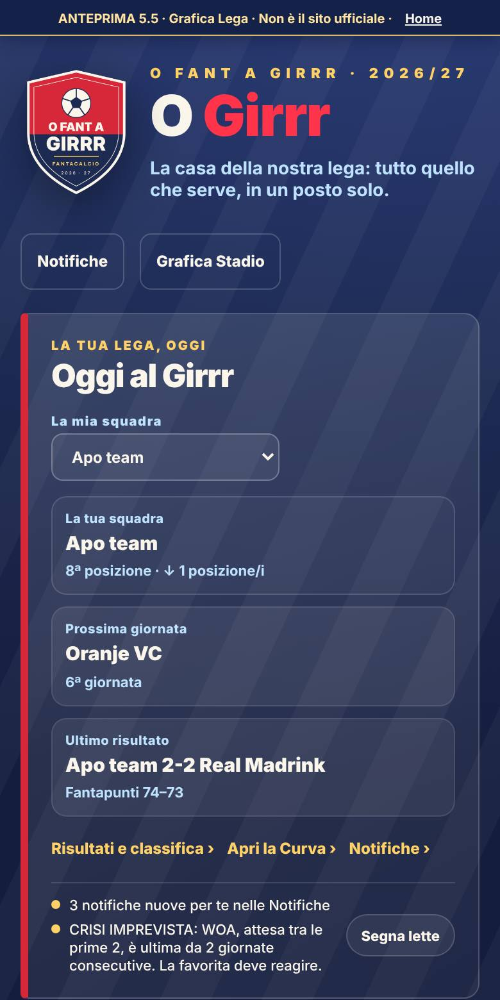

Nuovo
Oggi al Girrr
In cima alla Home, prima di tutto il resto: scegli la tua squadra e vedi subito com'è andata.
- La tua posizione e cosa è cambiato in classifica
- Il prossimo avversario e l'ultimo risultato
- La notizia della giornata (per esempio la crisi di una favorita)
Dove: Home, subito sotto il titolo. Tutte le card di prima restano.